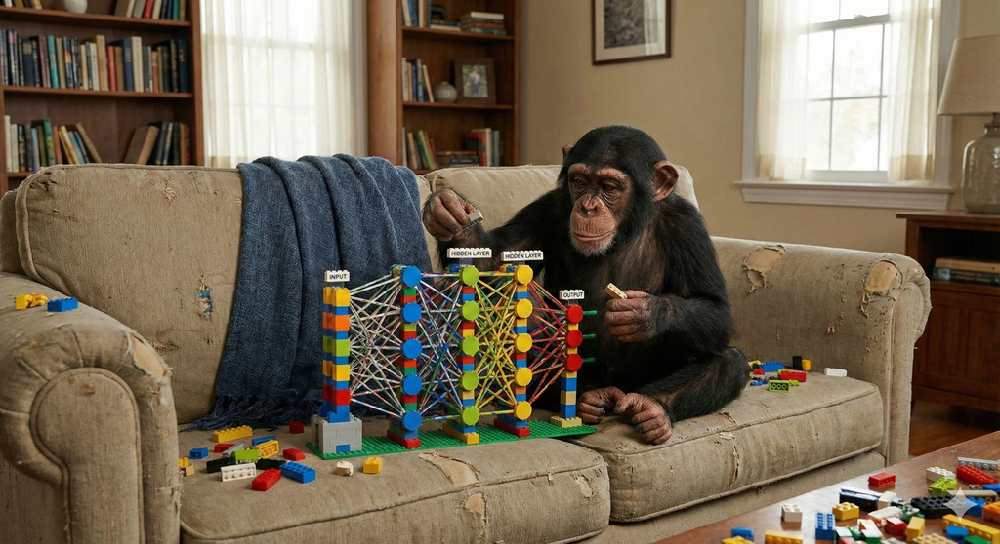

딥러닝 레이어 (Layers)

- 완전 컨볼루션 네트워크(Fully Convolutional Network, FCN, 2015)
- 잔차 연결(Residual Connection, 2015)
- Depthwise Separable Convolution
- FPN (Feature Pyramid Network, 2016)
- PANet (Path Aggregation Network)
- Dragon Hatchling (BDH) 아키텍처 포스트-트랜스포머 패러다임
Darknet
- Darknet-19 (2016)
- Darknet-53 아키텍처에 대한 심층 고찰
- CSPDarknet (2020)
- CMT (Convolutional Neural Networks Meet Vision Transformers)
- SPPF (Spatial Pyramid Pooling - Fast, 2021)
- YOLOv8 핵심 아키텍처 C2f 모듈